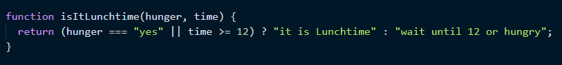
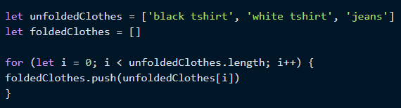
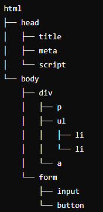

An analogy to describe JavaScript and its relationship to HTML and CSS
An analogy for JavaScript and its relationship with HTML and CSS is like a Rubik's Cube. In this analogy for Rubix cube:
HTML is like the structure and essential elements to create the cube for example there should be 26 distinct cubes.
CSS is like the appearance of the cube, specifying the color and arrangement of the squares making the puzzle visually appealing and distinct.
And finally: JavaScript is like the mechanism that allows you to twist and turn the Rubik's Cube. It enables interactivity and dynamic changes, allowing you to manipulate the cube's squares and work towards solving the puzzle. Just as the ability to move and rotate the cube is crucial for solving it, JavaScript adds interactivity and dynamic behavior to the webpage, responding to user actions and creating a more engaging and responsive experience.
Explain control flow and loops using an example process from everyday life, for example, 'waking up' or 'brushing your teeth' (but not those).
Control Flow
Control flow allows us to finely manage how our code executes. For instance, consider the decision-making process of deciding when to eat lunch. There are several factors to consider:
- Am I hungry?
- What time is it?
- When did I last eat?
- And so on.
Each of these factors acts as a condition. By setting up conditions, we can determine if it's time for lunch based on specific criteria. This simplifies decision-making significantly. For example, if the condition "Am I hungry?" is true, then it's lunchtime—no need to think about the other conditions like time or last meal. This streamlined approach saves time and mental effort.
However, if I'm not hungry, we might want to check other conditions. For instance, if I'm following a dietary schedule for exercise to ensure adequate protein intake, in this scenario, time of day could be another condition to consider if the hunger condition is false. This level of control allows us to precisely dictate the flow of actions based on varying circumstances, providing a granular approach to decision-making in coding.
An example of this in Javascript can look like:
Another thing I will share is an interesting video I watched on YouTube which uses conditionals for a game called FizzBuzz. It is a worthwhile watch:
Loops
When it comes to loops, you might have heard the phrase "stuck in a loop," well I recently learnt this can happen to computers too. However, loops can be incredibly useful. They provide precise control over when to start, repeat and stop a task to achieve a desired outcome.
Consider folding laundry as an example. Imagine you have a certain number of items to fold, and each item is folded individually. Using a loop for folding clothes means repeating the process for each item—each repetition is an iteration. You continue folding until all items are added to your folded pile. Of course, once all items are folded, you don't want to keep folding nothing. That's when you exit the loop.
An example of this in Javascript can look like:
Describe what the DOM is and an example of how you might interact with it.
The DOM, or Document Object Model, is a way for JavaScript to interact with HTML. The browser provides the document object model as part of the window object. It's akin to Google Translate in that it bridges communication between different languages. JavaScript doesn't inherently understand HTML, so the DOM translates HTML into a format JavaScript can comprehend. This is called the tree structure, here is a diagram of that:
Using this tree structure, JavaScript can dynamically modify HTML content, adding elements or altering existing ones, which is both efficient and powerful.
When working with Html and Javascript, these are some ways you can interact with the DOM:
- Including script tags directly within HTML files.
- Linking to external JavaScript files from HTML documents.
Another way can be in developer tools, here you can perform actions like console.log to debug or explore elements directly.
Explain the difference between accessing data from arrays and objects.
Arrays are indexed, objects are not. Array elements can only be accessed by using indexer accessing (bracket notation). Objects can contain properties and methods that can either be accessed via bracket notation or using dot notation. Furthermore, objects can be descruturced to access properties and methods.
Explain what functions are and why they are helpful.
Functions are self-contained blocks of code that can be reused. They can be called (invoked) and often require parameters to perform specific operations or computations. Each function has its own scope and can be declared within another scope. Functions are valuable because they promote code reuse, helping us avoid redundancy. Additionally, they improve code readability by allowing us to break down large blocks of code into manageable, understandable parts.